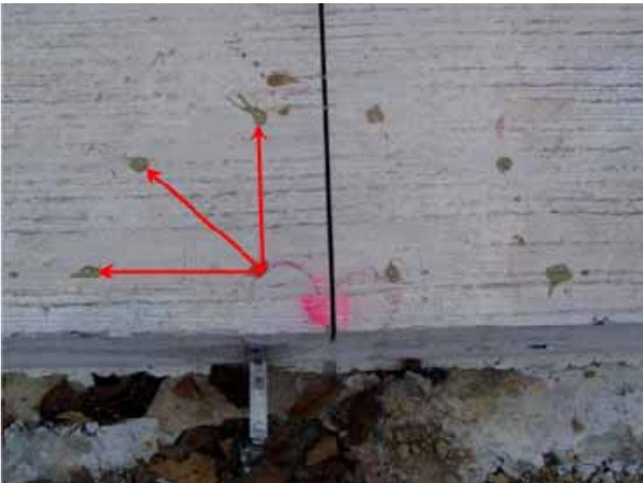
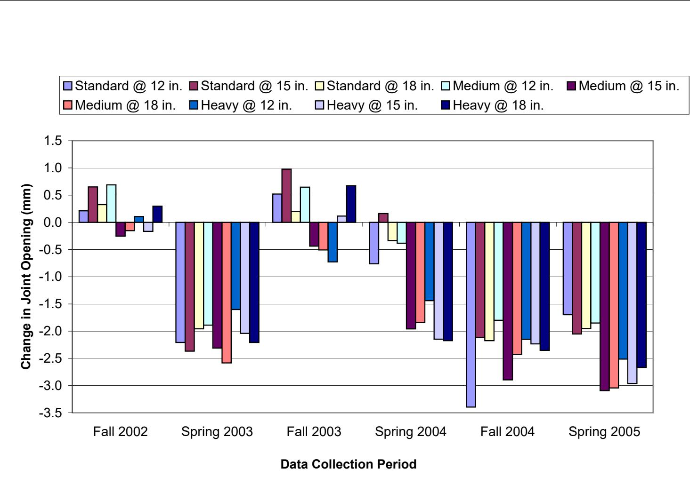
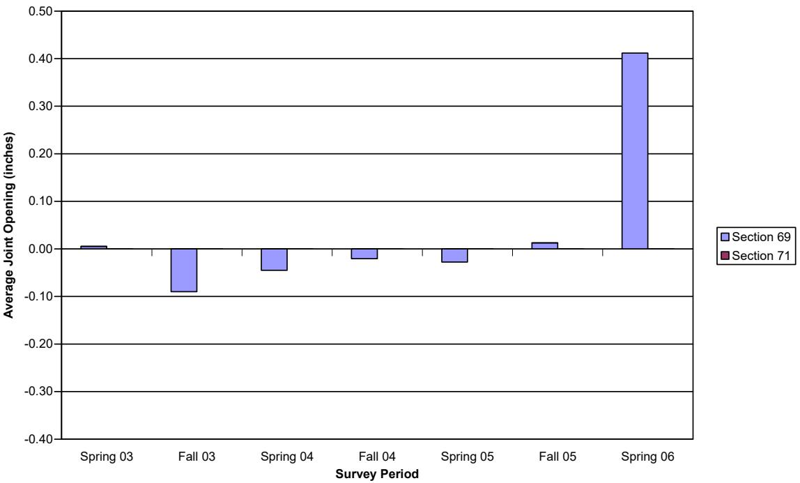
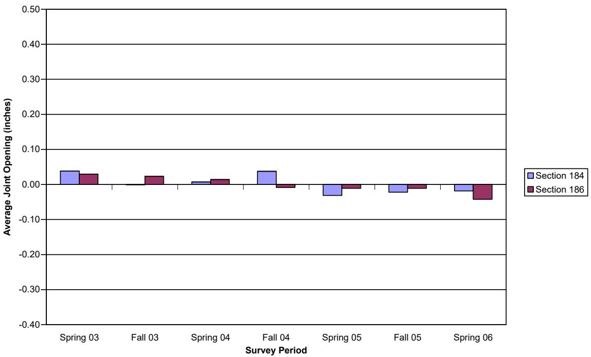
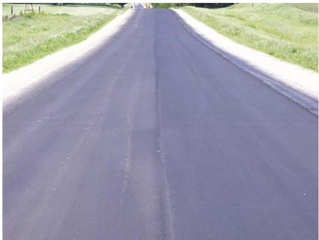
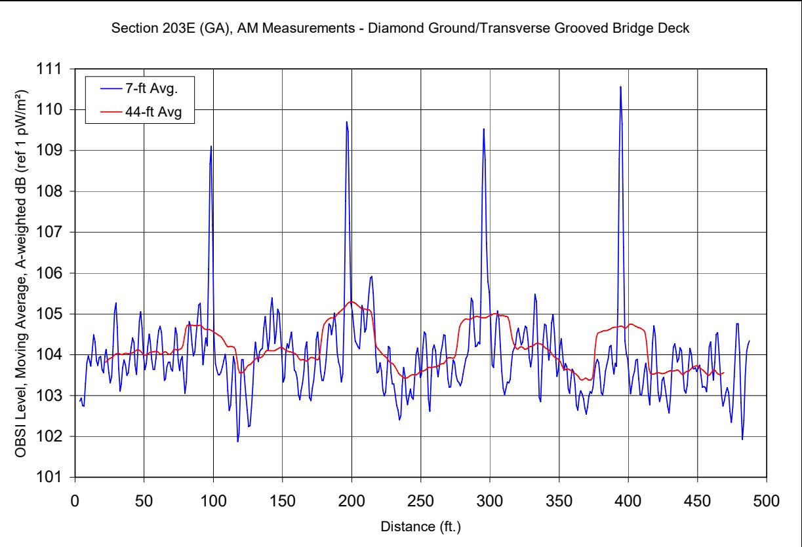
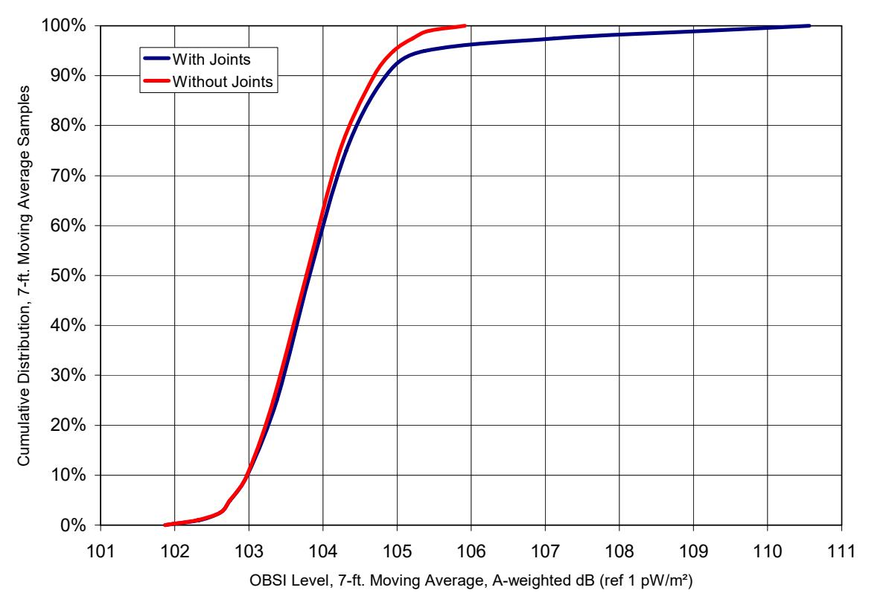

Joint Opening
Joint opening is defined as the physical gap width between adjacent concrete slabs at the joint face, measured in inches or millimeters [7]. This dimension represents a measurable property of the concrete pavement joint, which typically assumes an approximate gap size for standard road construction [7]. The presence and magnitude of this opening are critical because they influence dowel bar function and load transfer efficiency between the slabs [7]. Specifically, it refers to the measured width of a transverse joint in concrete pavement, which changes with thermal expansion and contraction of the pavement slabs. Monitoring joint opening over time provides insight into joint condition, load transfer device behavior, and whether joints are “locking” or remaining functional. [1]
Sources (9)
Joint Opening Measurement Methods and Tools
To measure joint movement, surveyor mag nails placed flush with the concrete surface on either side of the joint serve as reference points, where calipers measure the distance between them. Initial measurements taken shortly after paving establish a baseline, and digital calipers used for joint opening measurements provide a precision of 0.01 mm (0.0004 in.), with readings representing the difference between these baseline distances established immediately after construction and subsequent survey points [2]. These measurements are typically taken concurrent with faulting and visual distress surveys [1]. In the Iowa Highway 13 study, joint opening measurements were taken twice a year at ten consecutive transverse joints located at the center of each test section; reference points for these measurements consisted of nails placed on either side of the joints, spaced 10 inches apart and positioned 1 foot from the edge of the northbound lane [3].
 Calipers and surveyor nails (nails not installed) [1]
Calipers and surveyor nails (nails not installed) [1]
Other methods include attaching stainless steel discs to the pavement surface and measuring them with DEMEC calipers to characterize relative joint movement during diurnal cycles [4], while linear variable distance transducers (LVDTs) are installed at slab corners and mid-slab free edges to measure absolute slab movement due to curling and warping [4]. Additionally, transverse joints introduce texture depth variations at a scale comparable to longer wavelength roughness features, which can cause aliasing errors and increase sensor accuracy requirements for profilers on smooth pavements [5].

DEMEC points in the “peacock” pattern [4]Data Normalization and Environmental Factors
Joint opening measurements are referenced to initial readings taken shortly after construction because new joints have not yet fully opened or closed in response to temperature changes [4]. Within this framework, a negative value for the change in joint opening indicates joint expansion, while a positive value indicates joint contraction [1]. To allow for consistent comparison across different survey periods and environmental conditions, joint opening data is normalized to a standard temperature of 70°F [2].

Changes in joint opening averages, steel dowels [1]Pavement temperature gradients are estimated using embedded sensors like COMMAND Center iButton sensors or existing temperature gauges, which are coupled with FHWA HIPERPAV models to predict curling and joint opening behavior [6]. These temperature assessments allow for the calibration of predictive models regarding slab movement [6].
Factors Influencing Load Transfer and Dowel Performance
The ultimate strength and elastic dowel-concrete interaction of an interface containing a smooth dowel are substantially impacted by concrete strength, dowel diameter, and joint opening width [7]. Because Timoshenko’s equation does not account for complex nonlinear behavior associated with dowel yielding and locally high bearing stresses, the modulus of dowel support must be adjusted depending on the level of applied load [7]. Furthermore, larger diameter and stiffer bars are more effective at transferring load across joints compared to smaller or less stiff alternatives [7], though the looseness of the dowel bar significantly affects its response; specifically, if the hole diameter exceeds the dowel bar size, load transfer becomes insufficient [7]. When wheel loads are applied near a joint, not all dowels at the joint aid equally in transferring the load, as dowel bars closest to the load transfer more load than those furthest away [7].
 ( b ) Figure 4.5 Load transfer distribution proposed by (a) Friberg and (b) Tabatabaie et al. [7]
( b ) Figure 4.5 Load transfer distribution proposed by (a) Friberg and (b) Tabatabaie et al. [7]
Faulting prediction models are significantly influenced by site conditions such as traffic, climate, and subgrade, along with design features like dowel diameter, subdrainage, joint spacing, base type, and slab welding [7]. Subgrade conditions also influence dowel performance, as evidenced by load transfer values derived from deflection data, which were highest in fill sections and lowest in transition sections [8].
GFRP vs. Steel Dowel Field Results
GFRP dowels can replace standard steel dowels by transferring sufficient load over the service life of a highway pavement [7]. Because GFRP materials are corrosion-resistant and require no maintenance during the pavement’s lifespan, they offer an advantage over steel dowels which deteriorate in harsh corrosive environments created by deicing salts [7]. Furthermore, the larger diameter of GFRP dowels (38 mm or 1.5 in.) compared to standard epoxy-coated steel dowels (32 mm or 1.25 in.) provides higher shear stiffness and lower bearing stresses on the concrete [7]. Glasform dowels consistently performed above 90 percent joint effectiveness acceptance level, outperforming epoxy-coated steel dowels and FiberDowel products [7].
In the FHWA Project 5 study on Iowa Highway 330, joints with 10-inch and 12-inch elliptical FRP dowel spacing showed ~0.6 mm (0.024 in) change in joint opening, while 15-inch spacing showed ~1.0 mm (0.039 in) change; this larger change at 15-inch spacing indicates freer joint movement. All joints operated properly, exhibiting expected thermal expansion/contraction behavior with no locking. Additionally, in cut sections, joints with standard 1.5-inch bars at 12-inch spacing exhibited a joint opening range of approximately -0.04 to +0.06 inches over the monitoring period [8].
Unbonded Overlay Study Findings
The cable-2006-composite-pavement-unbonded-overlays-phase3 Iowa Highway 13 study found joint openings moved in a sinusoidal seasonal pattern similar to faulting. Adding fibers had no significant impact on joint opening. Panel size and overlay depth did not make significant differences. Scarification and patching provided equal performance; the HMA stress relief layer caused more variance. All joints moved very little over the first 3.5 years. [2]
The Iowa Highway 13 project utilized three distinct joint patterns over the original pavement: 4.5-foot squares, 6-foot squares, and 9-foot squares. Additionally, some sections featured deformed reinforcing bars added at the interface between the old concrete and the new overlay along the edges. [3]
 Typical Cross Section for the Iowa Highway 13 Project [3]
Typical Cross Section for the Iowa Highway 13 Project [3]
In the Iowa Highway 13 study, joint opening changes in a 3.5-inch overlay without fiber ranged from -0.11 to +0.08 inches for 4.5-foot slabs and -0.05 to +0.15 inches for 6.0-foot slabs. [2]
 Typical cross section for the Iowa Highway 13 project [2]
Typical cross section for the Iowa Highway 13 project [2]
The addition of fibers to a 3.5-inch overlay mix resulted in joint opening ranges from -0.10 to +0.40 inches with fiber A, and up to +0.41 inches with fibers B and C in 4.5-foot panels. [2]

Joint opening, 3.5” depth, HMA S. R., fiber A, 4.5’ panel [2]In a 4.5-inch overlay, joint opening changes ranged from -0.32 to +0.48 inches for sections containing fiber C within 9.0-foot panel configurations. [2]

Joint opening, 4 . 5 ° depth, patch, fiber C, 9’ panel [2]The inclusion of an asphaltic concrete stress relief layer resulted in higher maximum and minimum joint opening values compared to scarification or patching methods. [2]

HMA stress relief layer [2]Impact of Joint Movement on Pavement Noise
Diurnal changes in joint opening caused by slab curling can be quantified through synchronized measurements of texture profile and noise, revealing how joint movement affects acoustic traces [5]. This joint opening behavior can be directly correlated with acoustic phenomena, specifically “joint slap” noise generated by dynamic joint movement during diurnal temperature cycles [6]. To establish the relationship between thermal expansion and noise generation, instrumentation such as Demec gauge studs is used to measure this behavior alongside pavement temperatures [6].

Sound intensity levels corresponding to “joint slap” transients on a bridge deck. [6]The joint contribution to overall noise levels is influenced by variables including joint geometry (width, depth), condition (presence of spalling), sealant type and quality, and environmental factors such as slab temperature which dictates joint opening [6]. Analyzing these relationships helps in improving joint design to lower overall pavement noise [6].

Cumulative distribution of short window sound intensity levels with and without the effect of joints [6]Failure Mechanisms and Structural Distress
Joint failure mechanisms, which include faulting, pumping, spalling, corner breaking, blowups, and transverse cracking resulting from joint lockup, are the primary cause of most concrete pavement failures rather than inadequate structural capacity [9]. These failures can be exacerbated by repetitive high-stress loadings at the dowel bar-concrete interface, which create voids that increase deflection before the dowel takes on applied loads, thereby reducing load transfer efficiency [7]. Furthermore, transition sections have demonstrated a greater change in joint opening when wheel path only baskets were employed compared to full basket designs [8].
 Relative deflection between adjacent pavement slabs [7]
Relative deflection between adjacent pavement slabs [7]
To mitigate these issues, joint sealing is utilized to minimize precipitation penetration into the pavement structure, preventing base course or subgrade erosion that leads to joint faulting and loss of support, while also aiming to reduce durability-related distresses such as concrete D-cracking by limiting moisture infiltration [9]. To manage these complexities, advanced computational models can predict hourly joint movements over several years using Elastic Inertia Concrete Models (EICMs) and Finite Element Methods (FEMs), which analyze the impacts of water and incompressibles on pressure buildup, spalling, and base/subgrade erosion [9].
See also
References
- M. L. Porter, J. K. Cable, J. F. Harrington, N. J. Pierson, and A. W. Post, "Field Evaluation of Elliptical Fiber Reinforced Polymer Dowel Performance," PCC Center, Iowa State University, Ames, IA, Rep. DTFH61-01-X-00042 (Project 5), 2005. [Online]. Available: https://www.intrans.iastate.edu/wp-content/uploads/2018/03/frp_dowel.pdf
- J. K. Cable, J. L. Morud, and T. R. Tabbert, "Evaluation of Composite Pavement Unbonded Overlays: Phase III," CTRE, Iowa State University, Ames, IA, Rep. TR-478, 2006. [Online]. Available: https://rosap.ntl.bts.gov/view/dot/24065
- J. K. Cable, M. L. Anthony, F. S. Fanous, and B. M. Phares, "Evaluation of Composite Pavement Unbonded Overlays: Phases I and II," Center for Portland Cement Concrete Pavement Technology, Iowa State University, Ames, IA, Rep. TR-478, 2003. [Online]. Available: https://www.intrans.iastate.edu/research/completed/evaluation-of-composite-pavement-unbonded-overlays-phase-iii-tr-478-hr-1093-proj-2/
- H. Ceylan, D. J. Turner, R. O. Rasmussen, G. K. Chang, J. Grove, S. Kim, and C. S. Reddy, "Impact of Curling, Warping, and Other Early-Age Behavior on Concrete Pavement Smoothness: EFD Study (Phase I)," Center for Transportation Research and Education, Iowa State University, Ames, IA, Rep. DTFH61-01-X-00042 (Project 16), 2005. [Online]. Available: https://www.intrans.iastate.edu/wp-content/uploads/2018/03/curling_warping-2.pdf
- S. M. Karamihas and J. K. Cable, "Developing Smooth, Quiet, Safe Portland Cement Concrete Pavements (March 2004)," Center for Portland Cement Concrete Pavement Technology, Iowa State University, Ames, IA, Rep. DTFH61-01-X-0002, 2004. [Online]. Available: https://publications.iowa.gov/2956/
- T. Ferragut, R. O. Rasmussen, P. Wiegand, E. Mun, and E. T. Cackler, "ISU-FHWA-ACPA Concrete Pavement Surface Characteristics Program Part 2: Preliminary Field Data Collection," National Concrete Pavement Technology Center, Ames, IA, 2007. [Online]. Available: https://www.intrans.iastate.edu/research/completed/concrete-pavement-surface-characteristics-proj-15-part-2/
- M. L. Porter and R. J. Guinn, Jr., "Synthesis of Dowel Bar Research / Assessment of Dowel Bar Research," Center for Transportation Research and Education (CTRE), Iowa State University, Ames, IA, Rep. HR-1080, 2002. [Online]. Available: https://www.intrans.iastate.edu/wp-content/uploads/2018/03/dowelbarsynthesis.pdf
- J. K. Cable, S. L. Totman, and N. Pierson, "Field Evaluation of Elliptical Steel Dowel Performance," Center for Transportation Research and Education, Ames, IA, 2006. [Online]. Available: https://www.intrans.iastate.edu/wp-content/uploads/2018/03/elliptical-steel-dowels.pdf
- D. Harrington, R. Rasmussen, D. Merritt, T. Cackler, and P. Taylor, "Long-Term Plan for Concrete Pavement Research and Technology—The Concrete Pavement Road Map (Second Generation): Volume II, Tracks (FHWA-HRT-11-070)," National Center for Concrete Pavement Technology, Iowa State University, Ames, IA, 2012. [Online]. Available: https://www.fhwa.dot.gov/publications/research/infrastructure/pavements/pccp/11070/11070.pdf
Feedback on this page